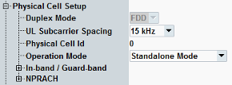
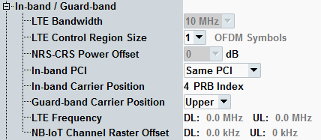
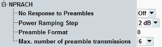

This section defines physical layer attributes of the simulated cell.

Selects the duplex mode. The current software version supports only FDD, not TDD.
Selects the uplink subcarrier spacing (3.75 kHz or 15 kHz).
Remote command:The cell ID is used for the generation of synchronization signals. During cell search, the UE determines the cell ID from the secondary synchronization signal.
The physical cell ID can be set independent of the cell identifier sent to the UE via broadcast (see "E-UTRAN Cell Identifier").
Remote command:Selects the operation mode. The UE is informed about this setting via the "operationModeInfo" in the master information block (MIB).
For the "Standalone Mode", there are no specific additional settings. For the other modes, configure also the "In-Band / Guard-Band" settings.
Remote command:This node configures settings for the operation modes "Guard-Band Operation" and "In-Band Operation".

For background information, see "Operation Modes".
Channel bandwidth for the generated LTE signal. Currently, the value is fixed.
Only for the in-band operation mode.
Configures how many OFDM symbols at the beginning of each DL subframe are used for the LTE PDCCH. These symbols cannot be used for NB-IoT. So a larger value reduces the NB-IoT DL throughput.
The value is signaled to the UE in the system information (SIB1-NB, eutraControlRegionSize).
Remote command:Defines the power offset of the NB-IoT NRS symbols relative to the LTE CRS symbols. Currently, the value is fixed.
For "In-Band Operation" with "Same PCI", this information is signaled to the UE in the system information (SIB1-NB, nrs-CRS-PowerOffset).
Only for the in-band operation mode. Selects whether the NB-IoT cell uses the same physical cell ID as the LTE cell.
The UE is informed about this setting via the "operationModeInfo" in the MIB.
"Same PCI" | Signaling value "Inband-SamePCI". The NB-IoT cell and the LTE cell share a physical cell ID. The UE can use the LTE cell-specific reference signal (CRS). |
"Different PCI" | Signaling value "Inband-DifferentPCI". The NB-IoT cell and the LTE cell have different physical cell IDs. The UE must use the narrowband reference signal (NRS). |
Only for the in-band operation mode. Specifies the number of the LTE resource block located at the NB-IoT carrier position.
Modifying the "In-Band Carrier Position" shifts the LTE channel relative to the NB-IoT carrier frequency, configured via the RF settings, see "RF Frequency".
Only certain values are allowed, depending on the cell bandwidth, see Table "LTE RB indices allowed for NB-IoT in-band operation, depending on LTE cell BW".
Remote command:Only for the guard-band operation mode. Defines whether the NB-IoT carrier is located in the lower guard band or in the upper guard band of an LTE channel.
The NB-IoT carrier frequency is configured via the RF settings, see "RF Frequency".
Modifying the "Guard-Band Carrier Position" shifts the LTE channel relative to the NB-IoT carrier.
Remote command:Displays the center frequency of the generated LTE cell signal. The frequency is calculated from the NB-IoT RF frequency, the LTE cell bandwidth and the setting "In-Band Carrier Position" or "Guard-Band Carrier Position".
For the standalone mode, no LTE cell signal is generated.
Remote command:Displays the offset of the NB-IoT carrier center frequency from the channel raster, that means from the configured RF frequency, see "RF Frequency".
The center frequency of the NB-IoT carrier equals the configured RF frequency plus the displayed offset.
The DL channel raster offset is signaled to the UE via the MIB.
For the standalone mode, the channel raster offset is zero.
Remote command:This node configures settings related to the random access procedure.

By default, the signaling application responds to received preambles, so that the UE can perform an attach. Alternatively, received preambles can be ignored (no response), so that the UE continues to send preambles and NPRACH measurements can be performed (included in R&S CMW-KM300).
"Off" | The signaling application responds to received preambles. |
"On" | Any received preambles are ignored by the signaling application (no response). |
Specifies the transmit power difference between two consecutive preambles. This value is broadcasted to the UE.
If you set the step size to 0 dB, the preamble power is kept constant by the UE. Thus you can use a constant expected nominal power setting during an NPRACH measurement.
Remote command:Selects the preamble format.
Format "0" | CP length = 66.7 µs (2048 Ts), preamble duration = 5.6 ms |
Format "1" | CP length = 266.7 µs (8192 Ts), preamble duration = 6.4 ms |
The value is signaled to the UE as "preambleTransMax-CE".
Remote command: